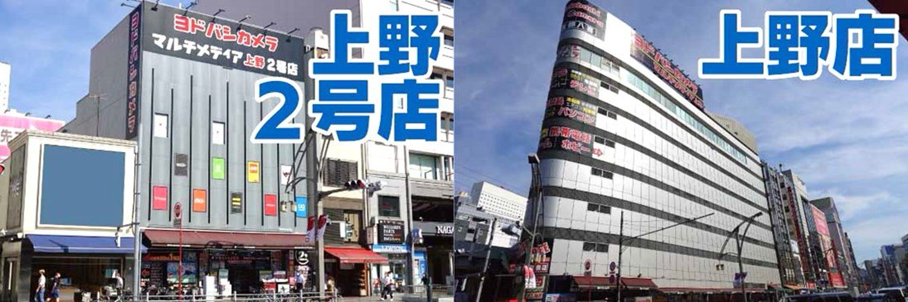
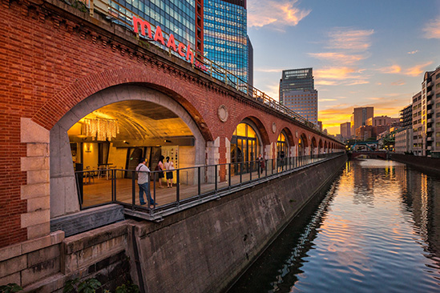

English
English
 简体中文
简体中文
上野、秋葉原エリア
東京に来たら、上野は絶対に訪ねる場所です。
Day 1: 上野、秋葉原
上野駅は東京の中心です。アクセスしやすく、交通便利です。観光地が多いだけではなく、ショッピングもしやすいです。

上野公園での文化、芸術

上野恩賜公園は日本で１番古い公園です。公園内には国立博物館、国立科学博物館、上野の森美術館、上野動物園、図書館、文化会館などの９つの文化施設や、ボートに乗れる池、巨大な噴水、 西郷隆盛像など、たくさんのみどころがありますよ！
国立博物館
日本で最も長い歴史を持つ博物館

科学博物館
宇宙や地球のふしぎに出会える場所 目印は大きなクジラとSL（蒸気機関車）。 日本館と地球館の2つの建物があり、微生物からロケットまで、 地球にまつわるものがいろいろ展示されている。 大迫力の恐竜の化石やクジラの骨格、動物達の剥製などが見られます。

上野動物園
東京都心部にありながら、自然を維持する都市型動物園で、約300種、3000点の動物が飼育されている。

上野公園
敷地面積は53万平方メートルで、広大な面積を誇り、歴史もある公園。春には桜の名所として国内外から観光客が訪れるなど、東京を代表する観光スポットの一つ。

上野周辺のショッピング：アメ横商店街、秋葉原
アメ横商店街
「アメ横商店街」とは、JR「上野」駅から「御徒町」駅までの西側高架下におよそ500ｍ続く商店街のこと。アメヤ横丁を略してアメ横と呼ばれている。かつてアメリカ進駐軍の放出品を格安で手に入れられる場所として発展したという歴史を持ち、今でも輸入雑貨をはじめ、様々な商品が格安に手に入るスポットとなっている。正月向けの食材を買い求める人々でごった返す光景は、年末恒例の風物詩。戦後の復興を支えてきたアメ横には、魚介類などの食材、日用品、化粧品、アクセサリーなど400店舗以上ものお店が軒を連ねている。

ヨドバシカメラ上野店
ヨドバシカメラは、日本製の電化製品だけでなく、時計、PC、化粧品、玩具、アクセサリーなど、 英語、中国語、韓国語を使った商品説明や、接客が出来るスタッフが数多く揃っております。免税手続きを行うサービスも提供しております。
御徒町駅 ユニクロとGUで衣服を買い物
上野・御徒町エリアに待望の「ユニクロ」超大型店舗が登場！約860坪の面積。
家族の衣服を買う場所です。

秋葉原
ユニクロで買い物後、歩いても秋葉原に行きます。
秋葉原は世界的な電気の街！そして、ゲームやアニメ、ポップカルチャーの発信地であり中心地です！
お買い物を楽しむのはもちろん、次世代アイドルと出会えたり、
テーマカフェやメイドカフェで楽しんだり！

ヨドバシカメラ秋葉原店
JR秋葉原駅前にある複合商業施設「ヨドバシAkiba」の中核をなす大型家電量販店である。
国内だけでなく海外からも多くの人が訪れるショッピングスポットで、3階には日本土産やツーリスト向け商品のコーナーもある。
海外に使える炊飯器など家電、日本製のお土産はここで買える。

マーチエキュート神田万世橋
1912年につくられた「万世橋高架橋」を利用してできたショッピングスポット「マーチエキュート神田万世橋」。 レンガやアーチを生かした雰囲気のあるつくりのなかには、雑貨や飲食店、クラフトビール専門店など、感度の高いショップが集まる。
